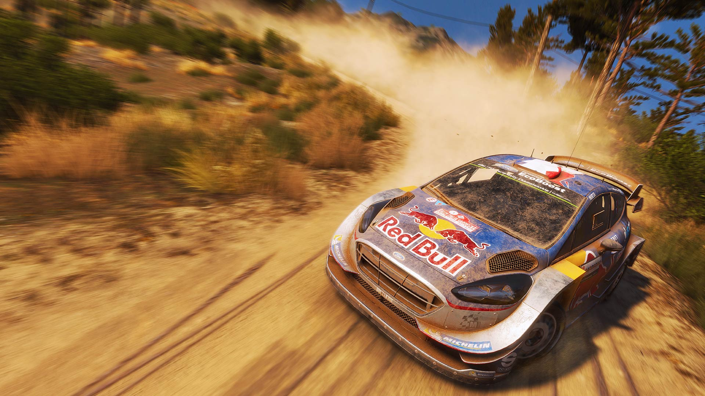
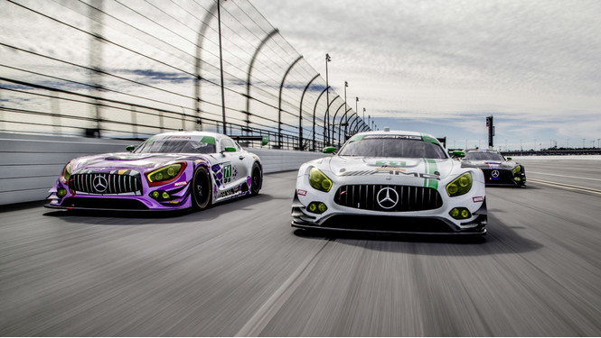

Ралли-рейд — вид моторных гонок на длинные дистанции по пересечённой местности, проходящий в течение нескольких дней. Участники гонки обычно преодолевают за день 400—900 километров. Временна́я протяжённость составляет от 3-х до 30 дней, самым долгим является ралли-рейд Нью-Йорк — Париж. Наибольшим зрительским интересом обладает Ралли Дакар. В ралли-рейдах на автомобилях кроме пилота участие в гонке принимает штурман.
Ралли — вид автогонок, проходящих на открытых или закрытых трассах на модифицированных или специально построенных автомобилях. Этот вид гонок отличается тем, что заезды главным образом прокладываются по автомобильным дорогам общего пользования, в формате «из пункта A в пункт B» с прохождением контрольных точек.
«Формула-1» (англ. Formula One) — высший класс гонок на автомобилях с открытыми колёсами, санкционированный Международной автомобильной федерацией (ФИА). ... В Формуле-1 соревнуются как отдельные пилоты (за титул чемпиона мира), так и команды (за Кубок конструкторов).
На бумаге условия просты: надо проехать несколько кругов быстрее соперников и успешно пройти повороты. Но на деле все эти шпильки, апексы, эски и шиканы приносят пилотам и зрителям немало адреналина. Кольцевые гонки — те самые, о которых все мечтают: скорость, болиды с кучей кнопок, комбинезоны, которые не берет горящее топливо, рев моторов, визг шин… В общем, вполне себе мужская музыка.
